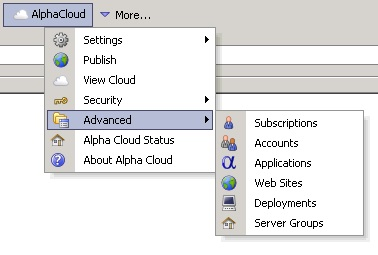

Alpha Cloud - Alpha Anywhere Developer's Guide
The Usage and Costs Dialog
The Cost and usage Summary Tab Page
The Projected Overages Tab Page
The Usage Detail Tab Page
The Cloud View dialog provides access to status, activity and logs for applications you have deployed on Alpha Cloud.
To view usage and costs your subscription:
Open the Manage Subscriptions dialog, by clicking the Alpha Cloud toolbar icon on the web control panel and selecting "Advanced" and then "Subscriptions" from the drop down menu.

The Manage Subscriptions dialog will display.

Select the subscription you want to view usage and costs for by clicking on the row where the subscription is displayed.
Click the button labeled "View Usage and Costs" toward the bottom of the dialog.
The Subscription Usage and Costs dialog will display as below.
Select the date you want to see usage through. The default is the current month and day.
All data for the month selected, and through the selected date, will be included in the data retrieved.
Note: You can save the data for the current tab page to a file by clicking the button labeled "Save To File..." at the top of the dialog.
The Usage and Costs Summary tab page presents the total subscription month-to-date usage for each billable item.
If you have used more than the amount included in your subscription, the overage amount and cost will be displayed as well
View a Full Sized Image
The Projected Overages tab page displays the same information as the Usage and Costs Summary tab page, but only includes those items for which the month-to-date usage for the subscription as projected to the end of the month will result in an overage charge.
View a Full Sized Image
The Usage Details tab page summarizes all usage by item for each deployment.
The listing is ordered by subscription, account, application and deployment.
{kind=link}
{kind=link}